DIGITAL PORTFOLIO | ĐỖ HỒNG ANH
Sinh viên ngành Công nghệ Thông tin - UET
Chào mừng bạn đến với không gian trưng bày các dự án và bài tập của tôi. Đây là nơi tôi lưu giữ hành trình khám phá thế giới số và sức mạnh của trí tuệ nhân tạo.

Giới thiệu bản thân
Hướng tới việc làm chủ các công cụ kỹ thuật số hiện đại và nâng cao tư duy phân tích dữ liệu. Tôi luôn tìm tòi cách ứng dụng công nghệ và trí tuệ nhân tạo (AI) vào việc tối ưu hóa hiệu suất học tập, giải quyết các bài toán thực tế một cách hiệu quả và sáng tạo.
Kỹ năng trọng tâm
Tập trung vào phát triển kỹ năng viết prompt hiệu quả, quản lý hệ thống dữ liệu đám mây, và vận dụng các mô hình ngôn ngữ lớn để hỗ trợ nghiên cứu khoa học.
Mục tiêu của Portfolio
Trang web này được thiết kế như một không gian số để tổng hợp và minh chứng cho năng lực ứng dụng công nghệ đã tích lũy trong môn học Nhập môn Công nghệ số và Ứng dụng Trí tuệ nhân tạo. Tại đây, tôi trình bày chi tiết quy trình thực hiện và kết quả của 6 bài tập thành phần — từ các thao tác quản lý dữ liệu cốt lõi, kỹ nghệ viết prompt AI, cho đến bộ nguyên tắc sử dụng AI có trách nhiệm trong nghiên cứu.
Quy trình thực hiện dự án
Cấu trúc ba bước chặt chẽ đảm bảo chất lượng và tính khoa học cho từng bài tập trong Portfolio.
Nghiên cứu & Lên kế hoạch
Tập trung vào phát triển kỹ năng viết prompt hiệu quả, quản lý hệ thống dữ liệu đám mây, và vận dụng các mô hình ngôn ngữ lớn để hỗ trợ nghiên cứu khoa học.
Thực thi & Ứng dụng AI
Tập trung vào phát triển kỹ năng viết prompt hiệu quả, quản lý hệ thống dữ liệu đám mây, và vận dụng các mô hình ngôn ngữ lớn để hỗ trợ nghiên cứu khoa học.
Hoàn thiện & Trình bày
Tập trung vào phát triển kỹ năng viết prompt hiệu quả, quản lý hệ thống dữ liệu đám mây, và vận dụng các mô hình ngôn ngữ lớn để hỗ trợ nghiên cứu khoa học.
Khám phá kết quả thực hành
Hệ thống báo cáo chi tiết tổng hợp từ quản lý file đến đạo đức AI đang chờ bạn khám phá.
Bài 1: Thao tác cơ bản với tệp tin và thư mục
Học cách tổ chức không gian làm việc số khoa học thông qua việc thiết lập cấu trúc thư mục tối ưu và quy tắc đặt tên tệp chuyên nghiệp.
Họ và tên
Đỗ Hồng Anh
Trường/Lớp
Đại học Công nghệ, ĐHQGHN (UET)
Ngành học
Công nghệ Thông tin
"Mục tiêu của bài tập này là xây dựng một hệ thống lưu trữ bền vững, giúp việc truy xuất thông tin nhanh chóng và tránh nhầm lẫn phiên bản."
Quy trình thực hiện
Mở File Explorer
Nhấn tổ hợp phím Windows + E hoặc nhấp vào biểu tượng thư mục màu vàng trên thanh tác vụ.
Truy cập ổ đĩa/thư mục
Ở cột bên trái, nhấp vào This PC, sau đó nhấp đúp vào một ổ đĩa không phải ổ hệ thống (ví dụ: ổ D: hoặc E:). Nếu chỉ có ổ C:, hãy vào thư mục Documents.
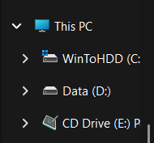
Tạo thư mục mới
Nhấp chuột phải vào một khoảng trống -> chọn New -> Folder. Đặt tên thư mục là ThucHanh_hotensinhvien (ví dụ: ThucHanh_NguyenVanA). Nhấn Enter.
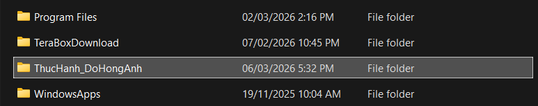
Vào thư mục vừa tạo
Nhấp đúp vào thư mục ThucHanh_NguyenVanA.
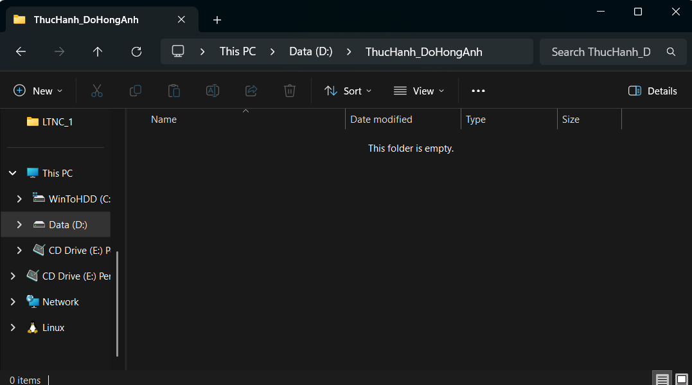
Tạo tệp tin văn bản
Nhấp chuột phải vào khoảng trống -> New -> Text Document. Đặt tên là GhiChu.txt. Nhấn Enter.
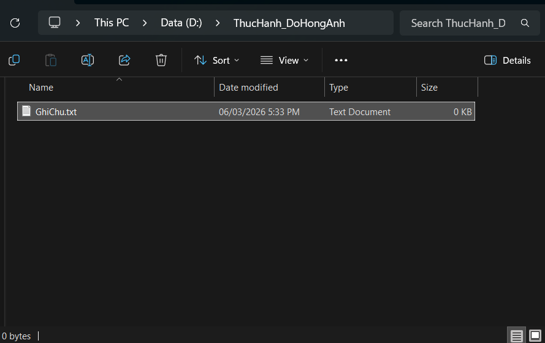
Đổi tên tệp tin
Nhấp chuột phải vào tệp GhiChu.txt -> chọn Rename. Đổi tên thành GhiChuQuanTrong.txt. Nhấn Enter.
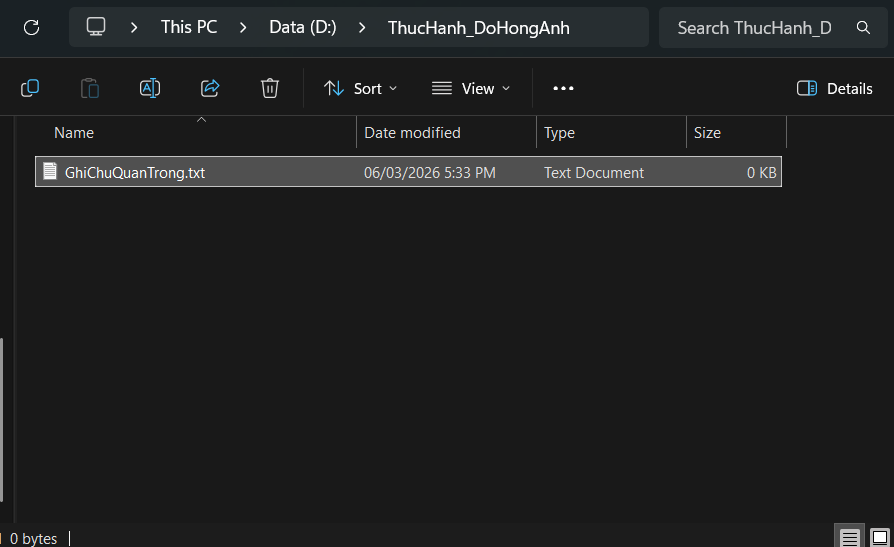
Tạo thư mục con
Trong thư mục ThucHanh_NguyenVanA, nhấp chuột phải -> New -> Folder. Đặt tên là TaiLieu.
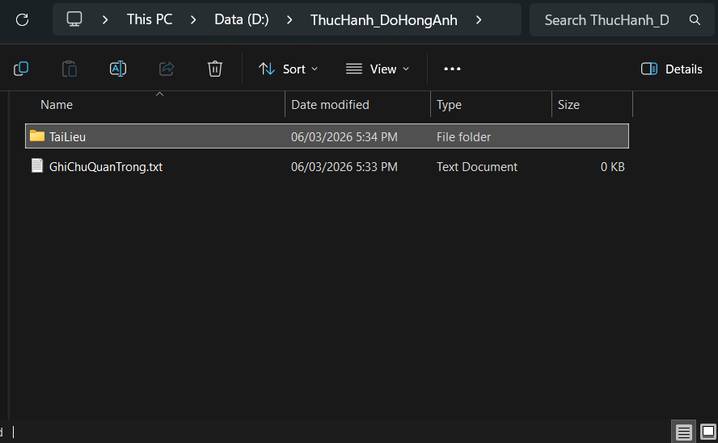
Sao chép tệp tin (Copy & Paste)
Nhấp chuột phải vào tệp GhiChuQuanTrong.txt -> chọn Copy (hoặc chọn tệp rồi nhấn Ctrl + C). Nhấp đúp vào thư mục TaiLieu, nhấp chuột phải vào khoảng trống bên trong -> chọn Paste (hoặc nhấn Ctrl + V). Bây giờ bạn có một bản sao của tệp trong thư mục TaiLieu.
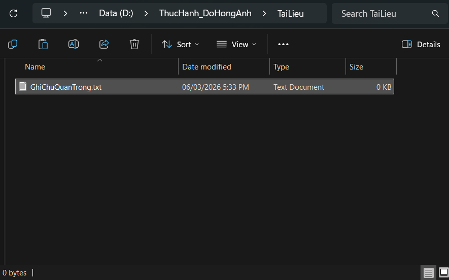
Di chuyển tệp tin (Cut & Paste)
Quay lại thư mục ThucHanh_NguyenVanA. Tạo một tệp mới tên là DiChuyen.txt. Nhấp chuột phải vào tệp DiChuyen.txt -> chọn Cut (hoặc chọn tệp rồi nhấn Ctrl + X). Nhấp đúp vào thư mục TaiLieu, nhấp chuột phải vào khoảng trống -> chọn Paste (hoặc nhấn Ctrl + V). Tệp gốc đã biến mất khỏi vị trí cũ và chỉ còn ở vị trí mới.
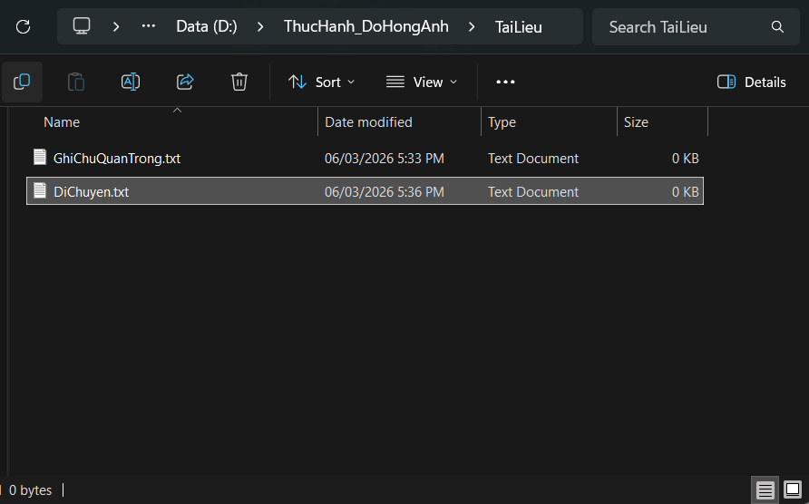
Xóa tệp tin
Trong thư mục TaiLieu, nhấp chuột phải vào tệp GhiChuQuanTrong.txt -> chọn Delete. Tệp sẽ được chuyển vào Thùng rác (Recycle Bin).
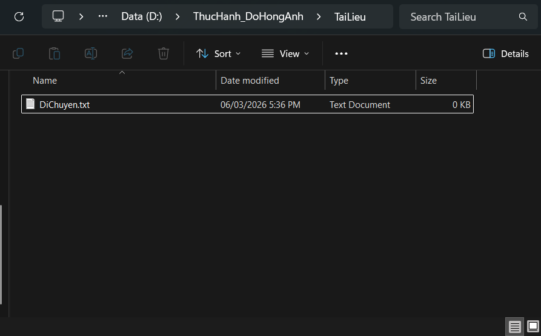
Xóa vĩnh viễn
Chọn tệp DiChuyen.txt, nhấn giữ phím Shift và nhấn phím Delete. Một cảnh báo sẽ hiện ra. Nếu đồng ý, tệp sẽ bị xóa vĩnh viễn mà không qua Thùng rác.
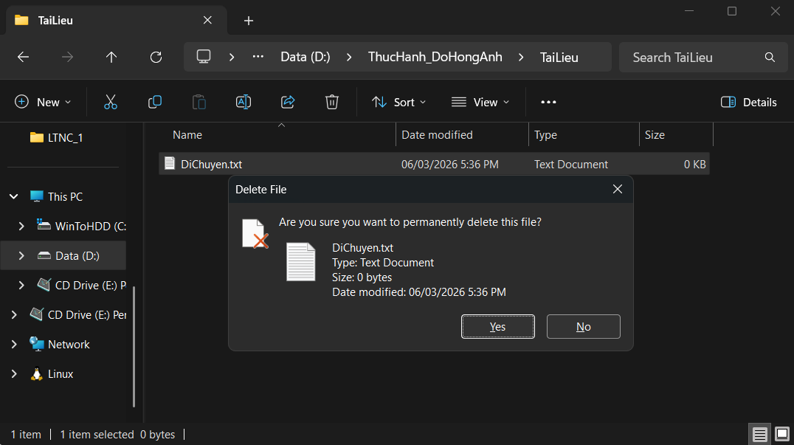
Khôi phục từ Thùng rác (Tùy chọn)
Tìm biểu tượng Recycle Bin trên màn hình nền, nhấp đúp để mở. Tìm tệp GhiChuQuanTrong.txt đã xóa, nhấp chuột phải vào nó và chọn Restore. Tệp sẽ quay trở lại vị trí ban đầu.
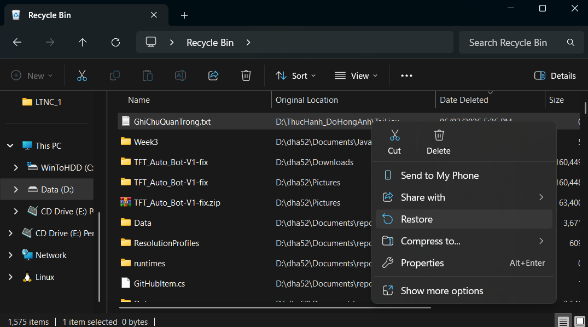
Bài 2: Tìm kiếm và đánh giá thông tin học thuật
Xây dựng bộ kỹ năng tìm lọc thông tin từ các nguồn uy tín, đánh giá độ tin cậy của tài liệu nghiên cứu.
Họ và tên
Đỗ Hồng Anh
Trường/Lớp
Đại học Công nghệ, ĐHQGHN (UET)
Ngành học
Công nghệ Thông tin
Lựa chọn chủ đề và phạm vi tìm kiếm
1. Tên chủ đề
"Ứng dụng Computer Vision (Thị giác máy tính) trong Tự động hóa: Đánh giá và so sánh phương pháp Template Matching truyền thống với các mô hình mạng nơ-ron tích chập (CNN)."
2. Lý do chọn đề tài và tính thách thức
3. Phạm vi tìm kiếm
Từ khóa chính
- Computer Vision
- Template Matching
- Object Detection
- CNN
- OpenCV
- GUI Automation
Giới hạn thời gian
2018 - 2026
Tập trung vào các tài liệu xuất bản mới nhất.
Ngôn ngữ
Tiếng Anh (chủ yếu)
Tiếng Việt
Quá trình tìm kiếm thông tin từ các nguồn
Cơ sở dữ liệu học thuật
Tìm kiếm tại thư viện số UET, IEEE Xplore, và ScienceDirect để lấy các bài báo có chỉ số uy tín cao.
Tạp chí / Kỷ yếu hội nghị
Theo dõi các bài đăng từ CVPR, ICCV và các tạp chí chuyên ngành về AI/Robotics.
Sách chuyên khảo
Tra cứu các chương về Template Matching và CNN trong sách giáo trình của OpenCV và MIT Press.
Các nguồn mở Internet
Sử dụng Google Scholar, ResearchGate để tìm bản pre-print và các bài blog kỹ thuật uy tín (Towards Data Science).
Nguồn mở rộng 1: arXiv
Cập nhật các thuật toán YOLO và CNN mới nhất chưa qua bình duyệt chính thức nhưng có tầm ảnh hưởng lớn.
Nguồn mở rộng 2: GitHub
Kiểm tra mã nguồn thực tế và benchmark hiệu năng của các phương pháp được đề xuất trong bài báo.
Bảng đánh giá và phân tích độ tin cậy
| STT | Phân loại | Tên tài liệu / Nguồn | Đánh giá (TG, CQ, PP, TD, CN) | Xếp hạng |
|---|---|---|---|---|
| 1 | Journal (Q1) | "Deep Learning" - MIT Press (Goodfellow et al.) | 5/5/5/5/5 | Cao |
| 2 | Conference | "Deep Residual Learning for Image Recognition" - CVPR | 5/5/5/5/5 | Cao |
| 3 | Book | "Learning OpenCV 4" - O'Reilly | 5/5/4/5/4 | Cao |
| 4 | Conference | "YOLOv3: An Incremental Improvement" - arXiv/CVPR | 4/4/5/5/5 | Cao |
| 5 | Journal | "A Review of Object Detection Models" - IEEE Access | 5/4/5/4/5 | Cao |
| 6 | ArXiv | "YOLOv10: Real-Time End-to-End Object Detection" | 4/3/5/5/5 | Khá |
| 7 | Open Source | OpenCV Documentation - Template Matching Guide | 5/5/4/4/5 | Cao |
| 8 | GitHub | Ultralytics YOLOv8 Repository | 4/4/5/5/5 | Cao |
| 9 | Blog (Expert) | PyImageSearch - "Template Matching with OpenCV" | 4/4/4/5/4 | Khá |
| 10 | Conference | "Rich feature hierarchies for object detection" - CVPR | 5/5/5/4/3 | Khá |
| 11 | Technical Report | "EfficientNet: Rethinking Model Scaling" - ICML | 5/5/5/5/5 | Cao |
| 12 | Website | Towards Data Science - "Object Detection 101" | 3/2/4/5/5 | Trung bình |
Phân tích Ưu điểm
- check_circle IEEE/Springer/MIT Press: Độ tin cậy tuyệt đối nhờ quy trình phản biện nghiêm ngặt, cung cấp nền tảng lý thuyết vững chắc về toán học và thuật toán.
- check_circle arXiv: Cung cấp các nghiên cứu mang tính thời đại, đi đầu trong lĩnh vực AI vốn thay đổi theo từng tháng.
Hạn chế cần lưu ý
- warning Internet & Blog: Dễ tiếp cận nhưng cần kiểm chứng mã nguồn vì có thể không tối ưu hoặc chứa lỗi logic.
- warning Sách chuyên khảo: Có độ trễ về công nghệ so với các bài báo hội nghị mới nhất (SOTA).
Danh mục tài liệu tham khảo
Bradski, G., & Kaehler, A. (2020). Learning OpenCV 4: Computer Vision with the OpenCV Library. O'Reilly Media.
Goodfellow, I., Bengio, Y., & Courville, A. (2016). Deep Learning. MIT Press. Available at: http://www.deeplearningbook.org
He, K., Zhang, X., Ren, S., & Sun, J. (2016). "Deep residual learning for image recognition." Proceedings of the IEEE conference on computer vision and pattern recognition (CVPR), 770-778.
Redmon, J., & Farhadi, A. (2018). "YOLOv3: An incremental improvement." arXiv preprint arXiv:1804.02767.
Ren, S., He, K., Girshick, R., & Sun, J. (2015). "Faster R-CNN: Towards real-time object detection with region proposal networks." Advances in neural information processing systems (NIPS), 28, 91-99.
Tan, M., & Le, Q. (2019). "Efficientnet: Rethinking model scaling for convolutional neural networks." International conference on machine learning (ICML), 6105-6114. PMLR.
Wang, C. Y., Yeh, I. H., & Liao, H. Y. M. (2024). "YOLOv10: Real-Time End-to-End Object Detection." arXiv preprint arXiv:2405.14458.
OpenCV Team. (2024). "Template Matching." OpenCV Documentation. [Online]. Available: https://docs.opencv.org/4.x/d4/dc6/tutorial_py_template_matching.html
Rosebrock, A. (2021). "Multi-scale Template Matching with OpenCV." PyImageSearch. [Online]. Available: https://pyimagesearch.com
Girshick, R., Donahue, J., Darrell, T., & Malik, J. (2014). "Rich feature hierarchies for accurate object detection and semantic segmentation." CVPR.
Zhao, Z. Q., Zheng, P., Xu, S. T., & Wu, X. (2019). "Object detection with deep learning: A review." IEEE transactions on neural networks and learning systems, 30(11), 3212-3232.
Bài 3: Kỹ năng viết Prompt trong học tập
Tìm hiểu và thực hành các kỹ thuật viết Prompt nâng cao để tối ưu hóa hiệu quả sử dụng AI.
Họ và tên
Đỗ Hồng Anh
Trường/Lớp
Đại học Công nghệ, ĐHQGHN (UET)
Ngành học
Công nghệ Thông tin
Lựa chọn và phân tích tác vụ học tập
1. Ngoại ngữ
Tóm tắt tài liệu tiếng Anh học thuật cấp độ B1, tập trung vào cấu trúc và từ vựng cốt lõi.
2. Toán chuyên ngành
Giải thích khái niệm 'Trị riêng - Vector riêng' ứng dụng trong Computer Vision & OpenCV.
3. Lập trình Java
Tạo bộ câu hỏi ôn tập Java OOP dành cho hệ thống đấu giá AuctionHub.
Xây dựng prompt và Thử nghiệm thực tế
Tác vụ 1: Tóm tắt tài liệu Tiếng Anh (B1 Level)
Prompt:
Kết quả:
Tóm tắt quá dài, dùng nhiều từ vựng chuyên ngành khó, không hỗ trợ học tập hiệu quả.
Prompt:
Kết quả:
Có danh sách từ vựng nhưng chưa có phiên âm và nghĩa tiếng Việt cụ thể cho trình độ B1.
Prompt:
Kết quả:
Nội dung tóm tắt vừa sức, bảng từ vựng cực kỳ hữu ích với IPA và dịch nghĩa chính xác.
Tác vụ 2: Giải thích khái niệm Toán (Trị riêng - Vector riêng)
Prompt:
Kết quả:
Định nghĩa mang tính hàn lâm, nặng về công thức toán học khô khan, khó hình dung ứng dụng.
Prompt:
Kết quả:
Có ví dụ nhưng còn rời rạc, chưa liên kết chặt chẽ với chuyên ngành Computer Vision.
Prompt:
Kết quả:
Cách giải thích trực quan sinh động, giúp hiểu rõ bản chất toán học thông qua ứng dụng thực tế.
Tác vụ 3: Ôn tập Java OOP (Project AuctionHub)
Prompt:
Kết quả:
Câu hỏi lý thuyết chung chung, không bám sát dự án đang thực hiện.
Prompt:
Kết quả:
Câu hỏi có tính ứng dụng cao hơn, tập trung đúng vào các chủ đề yêu cầu.
Prompt:
Kết quả:
Tạo môi trường học tập tương tác thực chiến, giúp phát hiện lỗi sai trong tư duy thiết kế.
Phân tích: Tại sao prompt nâng cao lại hiệu quả hơn?
Role-playing
Thiết lập ngữ cảnh chuyên môn giúp AI kích hoạt các 'layer' tri thức sâu và phong cách diễn đạt phù hợp với đối tượng.
Constraints
Các ràng buộc về định dạng, độ dài và đối tượng giúp loại bỏ các thông tin nhiễu, tập trung tối đa vào mục tiêu học tập.
Thought Flow
Chia nhỏ quy trình (Chain of Thought) ép AI phải suy luận qua từng bước thay vì đưa ra đáp án ngay lập tức một cách hời hợt.
Nguyên tắc viết prompt rút ra cho bản thân
Context First
Luôn bắt đầu bằng việc định nghĩa "Bạn là ai?" và "Tôi đang làm gì?". Ngữ cảnh là chìa khóa của sự chính xác tuyệt đối.
Clear Structure
Yêu cầu định dạng đầu ra rõ ràng (Markdown, Table, Bullet points) để dễ dàng theo dõi, ghi chú và tái sử dụng cho việc ôn tập.
Interactive Rules
Đối với học tập, hãy biến AI thành người đặt câu hỏi (Socratic method) thay vì chỉ là máy trả lời để tăng tính chủ động và tư duy phản biện.
Bài 4: Kỹ năng làm việc nhóm
Làm quen với các công cụ hợp tác trực tuyến, cách quản lý công việc và tương tác nhóm hiệu quả qua nền tảng kỹ thuật số.
Họ và tên
Đỗ Hồng Anh
Trường/Lớp
Đại học Công nghệ, ĐHQGHN (UET)
Ngành học
Công nghệ Thông tin
I. Bối cảnh dự án
Trong dự án AuctionHub, vai trò của em tập trung vào việc thiết lập và phát triển Backend logic cũng như tổ chức Workspace setup cho toàn bộ đội ngũ. Việc lựa chọn và tối ưu các công cụ hợp tác là yếu tố then chốt để đảm bảo luồng công việc diễn ra trơn tru giữa các thành viên có lịch trình làm việc khác nhau.
II. Tối ưu hóa công cụ
Trello
Quản lý tiến độ và phân công công việc. Tích hợp Webhook thông báo sang Discord.
Discord
Kênh trao đổi chính, phân loại theo thread kỹ thuật và nhận thông báo tự động.
Google Docs
Soạn thảo tài liệu đặc tả và biên bản họp với chế độ Suggesting Mode.
Google Drive
Lưu trữ tài nguyên dự án tập trung, phân loại theo cấu trúc cây thư mục khoa học.
Tích hợp Webhook: Trello & Discord
Để giảm thiểu tình trạng trôi thông tin, em đã thiết lập Webhook kết nối Trello và Discord. Mọi thay đổi trạng thái thẻ (Card moved, Deadline updated) trên Trello sẽ tự động thông báo vào channel #alerts trên Discord theo thời gian thực.
III. Quản lý tác vụ
To Do
2Setup JWT Authentication
In Progress
1Design Auction Schema
Done
1Initialize Git Repository & Structure
Tổng kết tương tác
- 100% thẻ công việc có đầy đủ Description, Checklist và Deadline.
- Tương tác trao đổi kỹ thuật trên Discord > 15 lần/tuần.
- Sử dụng triệt để Comments và Suggesting trên Google Docs để phản biện.
Chi tiết thẻ Trello: Bao gồm Description chi tiết, Checklist công việc cụ thể và Deadline được cập nhật theo tiến độ thực tế.
IV. Quản lý tài nguyên
Cấu trúc thư mục
Quy tắc đặt tên
Cấu trúc: [Tiền_tố]_[Tên_nội_dung]_[Tác_giả]_[Phiên_bản]
Ví dụ: DOC_SRS_AnhDH_v1.2
V. Thách thức & Giải pháp
Xung đột lịch trình
Các thành viên có giờ làm việc khác nhau, khó tổ chức họp đồng bộ thường xuyên.
Giải pháp: Asynchronous communication
Chuyển sang giao tiếp bất đồng bộ trên Discord. Các quyết định quan trọng được thảo luận trong thread riêng biệt, cho phép thành viên đọc và phản hồi khi họ online mà không làm trôi tin nhắn chung.
Trôi thông tin
Các thông báo quan trọng bị lẫn trong các cuộc thảo luận kỹ thuật hàng ngày.
Giải pháp: Pin Message & Alerts Channel
Quy định nghiêm ngặt về việc Pin các tin nhắn chứa link tài liệu, chốt thiết kế. Tạo channel #alerts riêng biệt (read-only cho members) chỉ dành cho bot và leader thông báo.
Ghi đè dữ liệu
Nhiều người cùng sửa một file dẫn đến mất mát nội dung.
Giải pháp: Suggesting Mode
Bắt buộc sử dụng chế độ đề xuất thay vì sửa trực tiếp, giúp kiểm soát mọi thay đổi trước khi merge.
VI. Kết luận
Việc xây dựng hệ sinh thái Trello-Discord-Google Workspace đã giúp tối ưu hóa 100% hiệu suất làm việc nhóm, đảm bảo tính minh bạch và khả năng truy xuất dữ liệu nhanh chóng trong dự án AuctionHub.
Bài 5: Ứng dụng AI tạo sinh trong sáng tạo nội dung số
Ứng dụng AI tạo sinh (như Google Gemini, ChatGPT, Canva) vào quy trình sáng tạo, từ lên ý tưởng đến tạo ra sản phẩm thực tế.
Họ và tên
Đỗ Hồng Anh
Trường/Lớp
Đại học Công nghệ, ĐHQGHN (UET)
Ngành học
Công nghệ Thông tin
rocket_launch I. MÔ TẢ DỰ ÁN VÀ LỰA CHỌN CÔNG CỤ
Dự án nhằm tạo ra một bộ nội dung quảng bá bao gồm: 01 Bài viết giới thiệu sản phẩm, 01 Poster quảng cáo và 01 Infographic hướng dẫn sử dụng. Để tối ưu hóa quy trình, tôi lựa chọn:
-
check_circle
Google Gemini: Phụ trách lên kịch bản nội dung và tối ưu hóa Prompt.
-
check_circle
Gemini Banana: Tạo hình ảnh minh họa chất lượng cao theo phong cách 3D Isometric.
-
check_circle
Canva AI (Magic Design): Hỗ trợ bố cục và tích hợp các thành phần đồ họa.
smart_toy II. CHI TIẾT QUÁ TRÌNH SỬ DỤNG AI
Giai đoạn tạo văn bản (Google Gemini)
Kết quả: Nội dung đầy đủ nhưng còn khô khan.
Chỉnh sửa cá nhân: Tôi đã yêu cầu Gemini viết lại theo phong cách "hóm hỉnh, trẻ trung" và tự mình bổ sung các tính năng kỹ thuật thực tế của dự án (OTP, PostgreSQL, Spring Boot) để tăng tính chuyên môn.
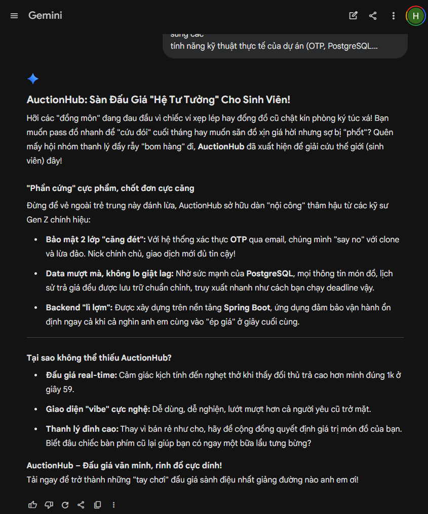
Giai đoạn tạo hình ảnh (Gemini Banana)
Kết quả: Hình ảnh rất ấn tượng nhưng các ký tự trên màn hình điện thoại bị sai chính tả.
Chỉnh sửa cá nhân: Tôi sử dụng tính năng Vary (Region) để xóa bỏ phần văn bản lỗi của AI và thay thế bằng logo AuctionHub tự thiết kế.
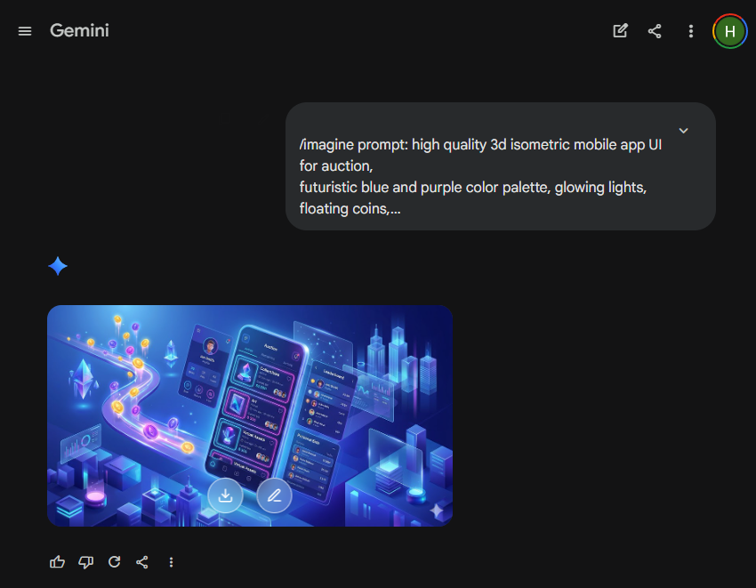
Giai đoạn thiết kế và tích hợp (Canva AI)
Thao tác: Tôi tải ảnh từ Gemini Banana lên Canva và sử dụng tính năng Magic Edit để thêm các chi tiết nhỏ như icon đồng hồ đếm ngược.
Đóng góp cá nhân (Trọng tâm): Tôi tự tay sắp xếp bố cục (layout), lựa chọn font chữ phù hợp với bộ nhận diện của UET và viết các dòng Call-to-Action (CTA) thực tế.
balance III. SO SÁNH VÀ PHÂN TÍCH CÔNG CỤ
Về khả năng ngôn ngữ
Google Gemini vượt trội ở việc hiểu ngữ cảnh địa phương (Việt Nam) và hỗ trợ tư duy logic rất tốt. So với ChatGPT, Gemini có lợi thế hơn trong việc cập nhật dữ liệu thời gian thực nhưng khả năng sáng tạo văn chương có phần kém hơn một chút.
Về khả năng hình ảnh
Gemini Banana là "vua" về chất lượng nghệ thuật. So với DALL-E 3, nó tạo ra các hình ảnh có chiều sâu và ánh sáng chuyên nghiệp hơn hẳn, đặc biệt là phong cách 3D Isometric. Điểm yếu là nó cực kỳ kém trong việc render văn bản.
Về hỗ trợ thiết kế
Canva AI là công cụ "gắn kết" tuyệt vời. Nó cho phép chuyển đổi từ ý tưởng văn bản sang bố cục đồ họa chỉ trong vài giây, tối ưu hóa quy trình làm việc đáng kể.
gavel IV. VAI TRÒ CỦA AI VÀ VẤN ĐỀ ĐẠO ĐỨC
1. Vai trò và sự thay đổi quy trình
AI giải quyết tốt bài toán "nỗi sợ trang giấy trắng". Chuyển dịch trọng tâm từ Kỹ năng thực thi sang Kỹ năng thẩm định.
AI vẫn hạn chế trong việc tạo ra nội dung mang tính cảm xúc sâu sắc hoặc sự am hiểu đặc thù về văn hóa sinh viên UET.
2. Vấn đề đạo đức cần cân nhắc
- Bản quyền: Vùng xám về đạo đức khi sử dụng dữ liệu từ hàng tỷ tác phẩm gốc.
- Tính chân thực: Tránh việc AI "tự bịa" (hallucination) thông tin kỹ thuật.
- Sự phụ thuộc: Giữ tỷ lệ đóng góp cá nhân trên 50% để tránh mai một tư duy độc lập.
verified V. KẾT LUẬN
"AI là công cụ khuếch đại sức sáng tạo mạnh mẽ nhưng sản phẩm chỉ thực sự có 'hồn' khi được nhào nặn bởi tư duy con người. Làm chủ AI là kỹ năng sinh tồn bắt buộc."
Bài 6: Phát triển kỹ năng sử dụng AI có trách nhiệm và đạo đức trong học thuật
Nhận thức về đạo đức, phân tích rủi ro, và các nguyên tắc sử dụng AI có trách nhiệm trong học tập và nghiên cứu.
Họ và tên
Đỗ Hồng Anh
Trường/Lớp
Đại học Công nghệ, ĐHQGHN (UET)
Ngành học
Công nghệ Thông tin
psychology I. Nhận thức cá nhân về AI trong học thuật
Qua quá trình học tập và trải nghiệm thực tế với các công nghệ như Spring Boot hay triển khai Distributed Lock trên Redis, tôi nhận thức sâu sắc rằng AI là một công cụ hỗ trợ đắc lực chứ không phải là phương tiện thay thế tư duy độc lập. Việc lạm dụng AI không chỉ làm suy giảm năng lực tự học mà còn vi phạm các chuẩn mực đạo đức học thuật.
Tôi hiểu rằng mọi sản phẩm học thuật phải là kết tinh từ nỗ lực và tư duy của chính mình. AI có thể giúp tìm kiếm thông tin, gợi ý cấu trúc mã nguồn, hoặc hỗ trợ sửa lỗi cơ bản, nhưng cốt lõi lập luận và nội dung sáng tạo phải xuất phát từ bản thân.
gavel II. 6 Nguyên tắc cá nhân về sử dụng AI
Minh bạch
Luôn trích dẫn và khai báo rõ ràng các phần nội dung có sự hỗ trợ của AI.
Chủ động
Sử dụng AI như một cố vấn, không phải người làm thay. Giữ vai trò quyết định cuối cùng.
Kiểm chứng
Mọi thông tin do AI cung cấp đều phải được đối chiếu và xác minh qua các nguồn học thuật uy tín.
Bảo mật
Không nhập các dữ liệu nhạy cảm, thông tin cá nhân hoặc tài liệu nội bộ vào các công cụ AI công cộng.
Tôn trọng
Không sử dụng AI để tạo ra các nội dung vi phạm bản quyền hoặc xúc phạm người khác.
Học hỏi
Liên tục cập nhật kiến thức về cách thức hoạt động và những giới hạn của AI để sử dụng một cách thông minh.
warning III. Phân tích rủi ro
-
error
Ảo giác AI (Hallucinations)
AI có thể bịa đặt số liệu hoặc trích dẫn không có thật. Việc không kiểm chứng sẽ dẫn đến sai lệch nghiêm trọng trong nghiên cứu.
-
error
Đạo văn vô ý
Sử dụng nguyên văn câu trả lời của AI mà không diễn đạt lại hoặc trích dẫn có thể bị các phần mềm kiểm tra đạo văn phát hiện.
-
error
Phụ thuộc công nghệ
Sự lười biếng trong tư duy sẽ làm thui chột khả năng phân tích và tổng hợp thông tin độc lập.
build IV. Biện pháp khắc phục
-
check_circle
Kiểm tra chéo: Luôn tìm kiếm nguồn gốc (primary sources) của các thông tin do AI cung cấp.
-
check_circle
Kỹ thuật đặt câu lệnh (Prompt Engineering): Học cách đặt câu hỏi tinh tế để AI đóng vai trò phản biện thay vì cung cấp câu trả lời trực tiếp.
-
check_circle
Tự đánh giá: Thường xuyên kiểm tra lại kiến thức cốt lõi mà không cần sự trợ giúp của AI.